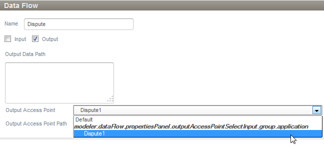
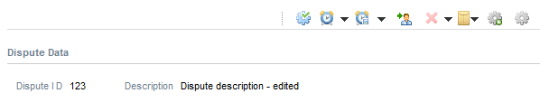

Figure: Run script
This tutorial describes the steps to mash up Angular based UI into the Stardust Portal. It describes how to ensure that data entered on the Angular UI is saved in the Stardust data and the Stardust data can be read and displayed in the Angular UI mashed up in the Stardust Portal.
You can create the model and code by following the steps in this chapter or import the example model and code provided by Stardust. Therefore download the following ZIP file containing the UI Mashup example model as well as the required HTML and JavaScript code:
To get started, we need to install node.js and download an example angular Web application.
We create code to mash up angular UI that will exhibit the reading and writing of data to Stardust data. If there is already data present in an Stardust data element that the mashed up UI relates to, it will read that data from Stardust over a RESTFUL service, show it in itself and allows editing as well. Once the data is edited and the Save and Complete button is clicked, it will write the edited data back to the Stardust data element by calling another RESTFUL service of Stardust. Enter the code for showDispute.html and showDispute.js or use the files downloaded with your example zip file.
Create showDispute.html and place it under the app folder of your angular-phone-master application folder. It provides entry fields for data and uses the showDispute.js script to save the edited data. The styling is provided in a way that in the input field the background color should change to light green in case the entry is valid and to pink if the entry is invalid.
<!doctype html>
<html ng-app="newRESTClient">
<head>
<style>
div.ex
{
width:640px;
padding:10px;
border:2px solid gray;
margin-left:10px;
border-style:outset;
}
.css-form input.ng-invalid.ng-dirty {
background-color: pink;
}
.css-form input.ng-pattern.ng-dirty {
background-color: blue;
}
.css-form input.ng-valid.ng-dirty {
background-color: lightgreen;
}
.fourBy20 {
width: 250px;
height: 35px;
}
</style>
<script src="lib/angular/angular.js"> </script>
<script src="lib/angular/angular-resource.js"> </script>
<script src="lib/misc/xml2js.js"> </script>
<script src="js/showDispute.js"> </script>
</head>
<body ng-controller="disputeCtrl">
<div>
<div ng-form name="masterForm" class="css-form">
<div class="ex">
Dispute ID <input tpye="text" ng-model="Dispute.disputeID" ng-disabled="true">
Dispute Description <textarea ng-class="{fourBy20: true}" ng-Model="Dispute.description" name="remarks" type="text" ng-maxlength="50"></textarea>
<button ng-click="saveDispute()">Save and Submit</button>
</div>
</div>
</body>
</html>
Create showDispute.js and place it under the app/js folder of your angular-phone-master application folder.
'use strict'
var newRESTClient = angular.module('newRESTClient', ['ngResource']);
function disputeCtrl($scope, $resource, $window){
$scope.$window = $window;
$scope.Dispute ={};
var x2j = new X2JS();
/* This method seraches and returns the desired query parameter (passed as arg) out of
window.location.href, which contains entire URL like:
http://localhost:8000/app/showDispute.html?
ippInteractionUri=http://localhost:<port>/DemoProject/services/rest/engine/interactions/MTA1fDEzNzU5NDIzNTE4ODY=
&ippPortalBaseUri=http://localhost:<port>/DemoProject
&ippServicesBaseUri=http://localhost:<port>/DemoProject/services/ */
$scope.urlParam = function(name){
var results = new RegExp('[\\?&]' + name + '=([^&#]*)').exec(window.location.href);
if (!results)
{
return 0;
}
return results[1] || 0;
}
$scope.saveDispute = function(){
var disputeData = "<?xml version=\"1.0\" encoding=\"UTF-8\"?><Dispute1>"+x2j.json2xml_str($scope.Dispute)+"
</Dispute1>";
console.debug("Dispute to Submit: "+ disputeData);
var res1 = $resource($scope.callbackURL+'/outData/Dispute2', {params: '@disputeData'}, {'put': {method:
'PUT', isArray: false, headers:{'Content-Type':'application/xml; charset=UTF-8'}}});
res1.put(disputeData,
function success() {console.debug("Success");}, function error() {console.debug("Failure");});
$scope.sleep(3000);
//*****Ensures that on button click IPP's activity that contains this UI gets completed and closed****
var mainIppFrame = parent;
//alert(mainIppFrame);
if (mainIppFrame)
{
if (mainIppFrame.InfinityBpm)
{
mainIppFrame.IppProcessPortalClient.completeActivity();
}
}
}
/**
* Delay for a number of milliseconds
*/
$scope.sleep = function (delay)
{
var start = new Date().getTime();
while (new Date().getTime() < start + delay);
}
$scope.sleep(1000);
$scope.callbackURL = $scope.urlParam("ippInteractionUri");
//To ensure that $resource maintains port no.
if($scope.callbackURL){
var newTemp = $scope.callbackURL.replace(/:/g, "\\:");
}
$scope.callbackURL = newTemp;
/*This section of scripts fetches data from IPP and set it to $scope data*/
var res2 = $resource($scope.callbackURL+'/inData/Dispute1', {}, {'get': {method:
'GET', transformResponse: function(data) {
console.debug("Data is:" + data);
var json = x2js.xml_str2json(data );
console.debug("JSON Data is:" + json.Dispute.disputeID);
$scope.Dispute.disputeID = json.Dispute.disputeID;
$scope.Dispute.description = json.Dispute.description;
}, isArray: false}});
res2.get(function success(data) {console.debug("Success");}, function error() {console.debug("Failure");});
}
Create a folder misc in folder app/lib of your angular-phone-master application folder and add your xml2js.js file there.
In the Web modeler, we will create a model containing the following:
Refer to the Business Process Modeling Handbook for details on how to create and work with these elements.
Create a structured type with elements disputeID and description as shown in the following screenshot:
Figure: Structured Type for Dispute
Create a structured data Dispute with this structured type.
Now create the UI Mashup application.
Figure: Create a UI Mashup Application
Open the Parameters tab in the properties page of the UI Mashup application and enter a parameter Dispute with In/Out direction. Choose data type Structured Data and select Dispute.
Figure: Add UI Mashup Parameters
Now go to the Configuration tab and enter URL http://localhost:8000/app/showDispute.html.
Figure: Enter URL
Create a Message Transformation Application to add default values to the Dispute data.
Figure: Create a Message Transformation Application
Open the Configuration tab in the property page of the Message Transformation. In the Target Message section, map default values to the Dispute elements as displayed in the following screenshot:
Figure: Enter mapping values
Take care to add apostrophes to the values as these represent String values.
Create a process and add the following elements:

The process should now look similar to the one displayed in the following screenshot:
Figure: Completed Process
Save and deploy the model.
Now we will start both Web servers and check whether the Stardust UI Mashup application is able to mashup both UIs and read and write back data.
Open the node.js command prompt, e.g. via the Start menu entry. Go to the directory where you have un-zipped the angular-phonecat application. Run node scripts/web-server.js.
Figure: Run script
You can check if is running by accessing http://localhost:8000/app/showDispute.html. The page should look similar to the following:
Figure: Angular UI Test
Switch to the Workflow Execution perspective and start the process.
Figure: Start the process
The mashed up Angular UI is displayed with the default values given by the Message Transformation application in the Stardust data, fetched over the Stardust RESTFUL service. Change a value and click the Save and Submit button.
Figure: Edit the data
The Stardust RESTFUL service writes the data back to the Stardust data element. The activity completes and the manual task is opening displaying the edited data.

Figure: Manual Task displaying the edited data
Now we successfully read and wrote data from Angular based UI from and to Stardust!